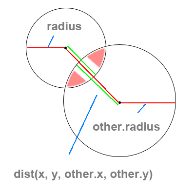
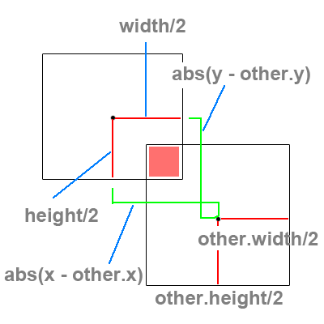

Collisions
Reading
-
TBA
Man is flying too fast for a world that is round. Soon he will catch up with himself in a great rear end collision. [James Thurber]
Radial Collisions
Since we have been drawing our character's with a center point at 0,0 it is easy for us to place an ellipse around
our character after translation by using
ellipse(0, 0, charWidth, charHeight);
where width and height are the width and height of the character.
We're going to see a collision detection technique that works by measuring the distance of a point to the character's center and checking if that distance is less than a radius.
Since we can only check one radius value for the entire circle around our character, this technique is best suited for characters with width == height.
In The Character Class
What Happened?
We created a method that has a parameter of another Character, when the distance between both character's center points is less than the sum of their two width's (radii in this case), then we have a collision. If this is not true, we MUST return false.
Bounding Box Collisions
Sometimes we might encounter a situation where our character has a width > height or vice versa. In order to accommodate this we must check what is referred to in video games as a "bounding box".
Think about putting a box around your character using
rect(-charWidth, -charHeight, charWidth, charHeight); which will place a
perfect bounding box around your character (provided that the numbers are correct).
There are two cases to consider when two bounding boxes are colliding:
- boxes overlap on the X axis
- boxes overlap on the Y axis
In The Character Class
What Happened?
We created a method that checks two character's to see if the absolute value (distance) of their x and y coordinates is less than their combined widths and heights. Since both of the cases for box collisions must be true, we combined the logic of each statement using an &&.
Box Volume and Accuracy

Obviously you can't hope for really good looking collisions with only detecting a box or circle collision around a complex character.
In most modern video games, characters are composed of several "hit boxes" which must be checked against the colliding objects.
The key problem here is that when you increase accuracy by adding more detailed hit boxes, you increase complexity in the amount of areas you must check.
The solution for not checking all boxes is to place one large hit box around a character, and if this box has collided with the other object, then you begin to check each of the smaller hit boxes inside.
About N Squared Problems, What..?
What does N-Squared mean? It means that in order to solve a problem involving n objects, we must perform n * 2 calculations.
An example of this is a nested loop: a loop inside that runs 10 times will run 10 times for every 1 time the outer loop runs. If the outer loop runs 10 or 100 times, we will have 100 or 1000 loops. Oops!
When it comes to collisions, there has been a lot of work around increasing speed with various methods and data structures:
- Pairwise Checks
- Hash Tables
- Binary Space Partitioning (BSP Trees)